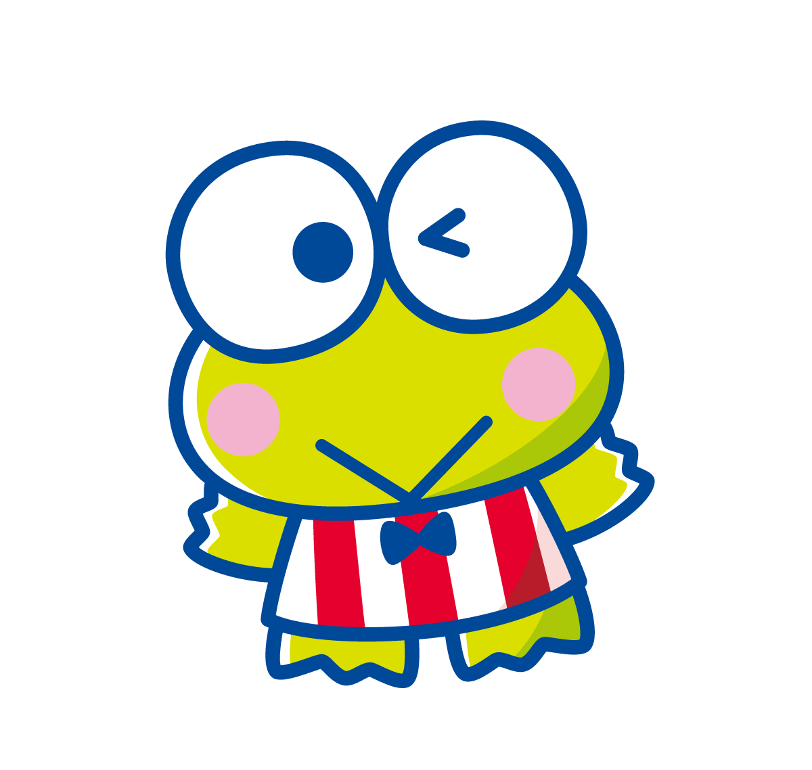
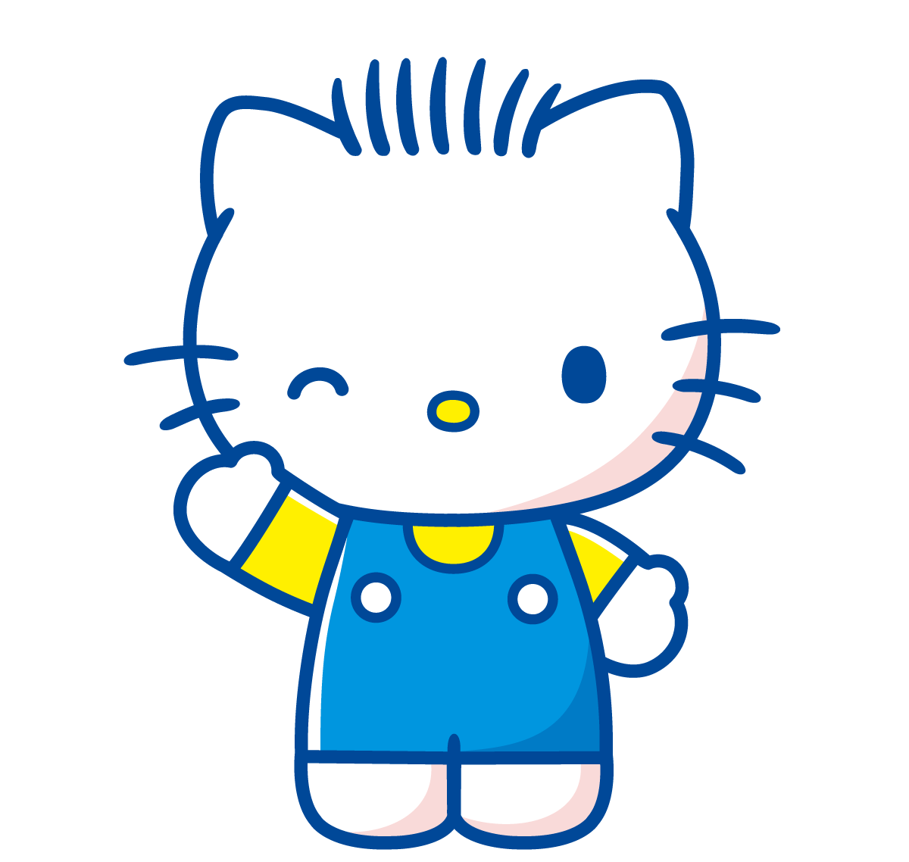
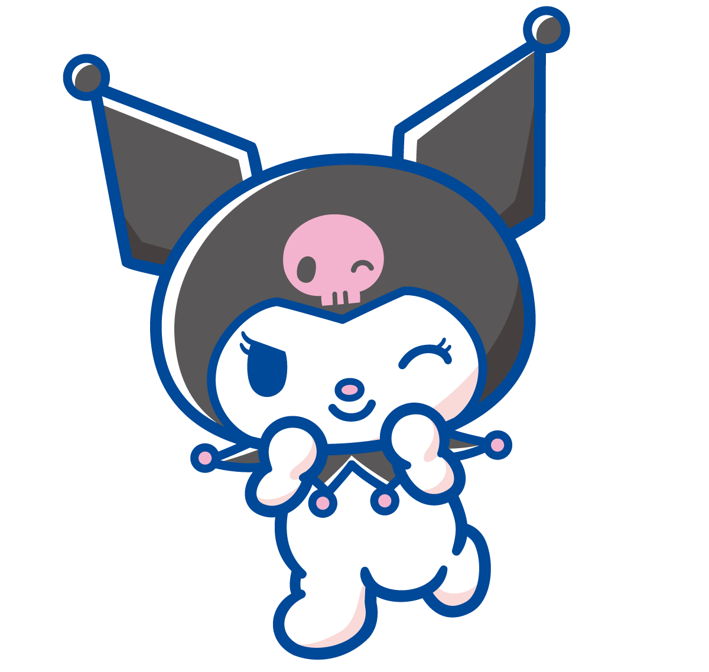

Bem vindos ao site da hello kitty! 🥰

Quem é hello kitty?
Hello Kitty, também conhecida por seu nome completo Kitty White, é uma personagem criada pela empresa japonesa Sanrio.
Apesar do bigode, das orelhas e do nome, Sanrio retrata Hello Kitty como uma jovem gijinka de um bobtail japonês com um
laço vermelho e, notavelmente, sem boca.
Principais Caracteristicas
- Laço vermelho
- Divertida
- Sem boca
Amigos Próximos
-
Keroppi 🐸
 -
My Melody 🐰

-
Dear Daniel 😺
 -
Kuromi 🐰

Glossário Hello Kitty 💖
- 🎀 Sanrio
- A empresa japonesa super kawaii que criou a Hello Kitty em 1974!
- 👯♀️ Mimmy
- É a irmã gêmea da Hello Kitty. Usa um lacinho amarelo (diferente da Hello!).
- ✨ Gijinka
- Palavra japonesa que descreve personagens com aparência humana (tipo a Hello Kitty, que é uma gatinha humanizada!).